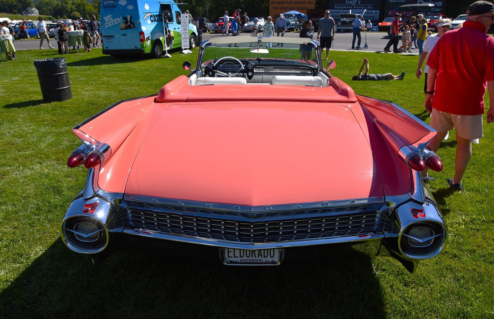

References / Product / 409
Cadillac Eldorado Biarritz, 1959
The 1959 Cadillac convertible, remembered for the tallest tail fins of the period: sharp fins with twin bullet tail lights over a jewel-like chrome grille.
- Source
- Wikipedia: Cadillac Eldorado
- Creator
- Cadillac, General Motors
- Made
- 1959 model year
- Style
- Googie (agent-proposed, not yet reviewed by a person)
- Moods
- Flashy, optimistic, jet-age
- Evidence
- Downloaded and inspected two CC0 photographs of one restored car at a 2025 show by “Charles from Port Chester, New York” on Wikimedia Commons, at 1920 px: the rear view (stored) and the front three-quarter view (Commons_(54801176727).jpg)). The pink paint is this car’s finish; the color is not documented as original.
- Reviewed
- Rights
- Open license, stored. License: CC0-1.0. Rights policy
Context
Wikipedia: the 1959 Cadillac is remembered for its huge sharp tailfins with dual bullet tail lights, two rooflines, and new jewel-like grille patterns with matching deck-lid panels. GM lowered, lengthened, and widened its 1959 styling in response to Virgil Exner’s redesign at Chrysler. Wikipedia: Cadillac Eldorado.
The Googie style record and Wikidata list jet aircraft and the Space Age as influences on Googie. Wikipedia: Googie architecture.
Observed
- Two tall fins rise from the rear fenders and end in sharp points that lean back past the trunk.
- Each fin carries a pair of red, pointed bullet-shaped tail lights, one above the other, set in chrome.
- The rear bumper ends at each side in a large round chrome pod with a dark center and a small chevron, like a jet exhaust.
- Between the pods, a wide grille of small chrome studs in rows spans the back; a matching panel sits on the deck lid.
- The body is flamingo pink with a white leather interior and bright chrome trim.
- Spectators and food trucks at the show stand in the background.
Why it belongs
The fins carry the same upswept, pointed line as Googie roofs and sign pylons, and the bullet lights read as rocket exhausts: the car is a product version of the style’s jet imagery.
It is a partial fit: the style is defined by signs and buildings, and the car has no starbursts, neon, or script signs.
Borrow
End a horizontal bar with a sharp upswept point, like a fin, instead of a rounded cap.
Use a tight grid of small studs or dots as a chrome-like texture strip, not a gradient.
Measured
Machine-extracted by tools/image-traits.py on . Full measurement.
- Mean chroma
- 0.22
- Palette
- #0b0d09 22%
- #fe8281 12%
- #63700e 5%
- #55630d 5%
- #fd8d90 5%
- #455314 4%
- #687327 4%
- #141822 3%


_(54802366150).jpg){kind=link}